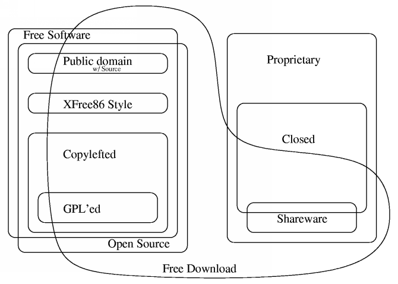

Kalbant apie laisvas programas dažnai minimi skirtingi terminai (pvz. Open Source (Atviras kodas), Free Software (Laisvos programos), public domain, Freeware, Shareware, ...). Ne visi terminai reiškia tą patį.
Šita Chao-Kuei diagrama vaizdžiai parodo skirtingų programinės įrangos kategorijų tarpusavio priklausomybes.
Laisvoji programinė įranga platinama yra su licencija, kuri leidžia kiekvienam naudoti programą nepriklausomai nuo panaudojimo srities, kopijuoti ir platinti ją nepakeistą arba su pakeitimais, už dyką arba už pinigus. Iš principo tai reiškia, kad su programa pateikiamas ir išeitinis tekstas. „Programa be išeitinių tekstų - ne programa.“ ("If it's not source, it's not software.")
Dažniausiai, sakant „Atviras kodas“, turima omenyje „Laisvos programos“. Tačiau šitas terminas gali būti vartojamas ne tik „laisvoms programoms“ apibrėžti. OSI (www.opensource.org) patvirtino nemažai licencijų, kurias laiko atviro kodo, tačiau kai kurios iš jų turi apribojimų, dėl kurių jos nėra suderinamos su laisvom (pvz. GNU GPL) licencijom. Taigi visos laisvos programos yra atviro kodo, bet ne visos atviro kodo programos yra laisvos.
Svarbu - „Atviras kodas Lietuvai“ laikosi požiūrio, kad „atviro kodo programa“ = „laisvoji programa“, kalbant apie atvirą kodą mes visada turime omenyje ir laisvę. Manome, kad naujas terminas FLOSS (Free libre and open source software) labiausiai atspindi mūsų požiūrį.
Public domain programinė įranga - tai programos, kurios atiduotos viešai nuosavybei, tokios programos nėra saugomos autorine teise. Jei programos kodas yra vieša nuosavybė, tai galime teigti, kad tokia programa yra laisva, nes kiekvienas gali ja naudotis savo nuožiūra, tačiau tam tikros programos modifikacijos (padarytos po to, kai programa tavo vieša nuosavybe) gali prarasti laisvę, nes nėra jokių taisyklių, draudžiančių uždaryti programą.
Programos, platinamos pagal copyleft tipo licencijas, tai tokios programos, kurių platinimo sąlygos neleidžia platintojams pridėti kokių nors papildomų apribojimų. Kitaip sakant, kiekviena programos kopija ir modifikacija privalo būti platinama pagal tą pačią licenciją kaip ir pirminė programa. Tai reiškia, kad kiekviena tokios programos kopija (net jei buvo modifikuojama), privalo likti laisva.
Paruošta pagal: „Categories of Free and Non-Free Software“